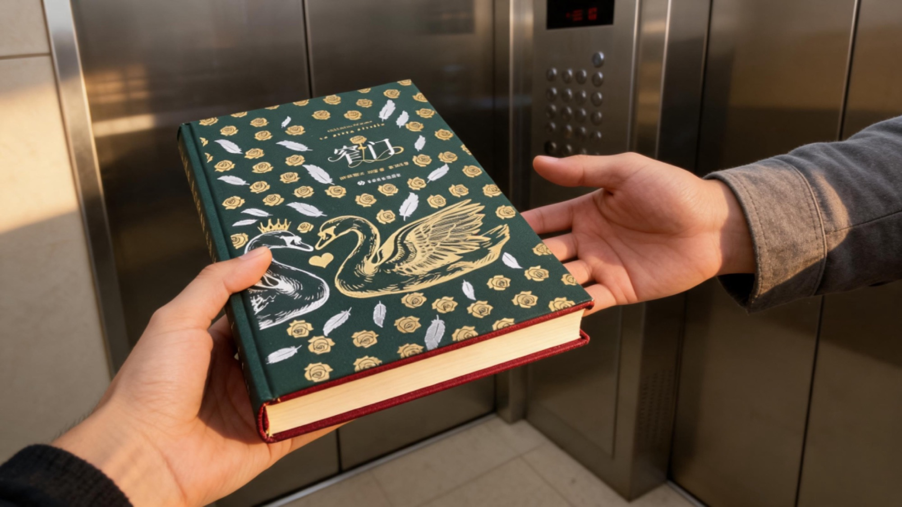

一本书，内容和装帧都可以很好看，这并不冲突。

一本书的好，不止在内容，也在装帧；一份礼物的好，不止在物品，而在「恰当的时间、恰当的人、恰当的情境」。 真正打动人的礼物，从来不是"对的礼物"，而是"对的时候"送到"对的人"手里。
背景：最近我结识了很多朋友，时不时会给朋友送一些我认为适合的礼物。我刚刚给一位女生送了一本书《窄门》。
01一本读过三遍的《窄门》
安德烈·纪德是我最喜欢的作家之一，尤其在文学领域，几乎是我最喜欢的第一位作家。
大学的时候，我就读过纪德的两本书，《田园交响曲》和《窄门》，印象非常深刻。虽然当时并没有读得太明白，但我依然很喜欢，在回忆中逗留了很长时间。
直到23年我重新拾起阅读，这本书我至少读过三四遍。所以那天听说她读了这本书，我就想，是不是可以送她这本书？
之前我给别人送书，都是平装版，没有特别关注精装或刷边版本。我一直觉得，书的内容最重要，封面包装只是最不重要的环节。
但那天我在想，美本身是一种良好的姿态。要不，我去买一本更好看的版本？
02快递"刚好"送到的那一刻
于是我下单了，第二天到货。
这件事特别神奇——第二天，正好碰到了我要送的那位女生。我当时正在翻看快递，她喊了我一声。我说先进去，晚点再看。走到电梯口时，发现那里也有快递，就顺手去看了一下。
结果，最上面那个快递就是我的，正是我要送给她的那本书。
我当场拆开，她看到后问："哎，这是一本窄门？" 我说："是的，我递给她，说到你把这个拆开" ，她说："为什么？"。然后我说："这是送给你的。"
她那一刻的情绪，对我影响很深。
那一刻，我觉得这个礼物特别有缘分。在那个时间点、那个情景下，一切都好像被安排好了。
03好看，从来不是没用的
另一个我想说的点是，当我看到那本书时，我发现它真的特别好看。后来她说她很喜欢那本书，我就一直在想：一本书不仅可以内容好看，它的包装和封面也可以很好看。
这两种"好看"，是可以并行的。
这是我最大的启示——原来"好看"并不是没用的。它真的会影响我们的阅读状态，提升我们在阅读中的体验。
这份喜悦，这份我送给别人的喜悦，也反过来传递给了我，让我感受到一种更深层的喜悦感。
04送书的三个阶段
其实在送礼物这件事上，尤其是送书，我经历了三个阶段。
第一个阶段，是我刚开始读书时，确实很喜欢读书，会主动送别人一些书。但后来发现，很多情况下极为不合适——因为很多人其实并不读书。你觉得送一本书显得很自然，但对于对方来说，可能一文不值。
过了一段时间，我开始反思自己：是不是我太理想主义、太文艺了？所以后来，我送礼就完全从世俗角度出发，送一些大家都接受的东西，比如男生喜欢的烟酒，女生喜欢的化妆品或好看的物件。
直到这一次，送出那本精装《窄门》的时候，我重新想通了：问题不在于送书好不好，而在于是否在恰当的时间、送给恰当的人、在恰当的地点、用恰当的话语表达出来。
当这一切都恰如其分时，这本书才会对彼此产生巨大的能量，传递真正的喜悦。
现在，我会在网上购买很多刷边书、精装书，它们都非常精美。我会把它们存下来，直到有一天遇到另一个适合的人，再把我在书中获得的喜悦传递给TA。
我送出的每一本书，都是我自己读过的，而且不止一遍读过的。
这份喜悦会一直传递下去。
俗到极致即为雅，雅得过头便是俗——是谓雅俗共赏。